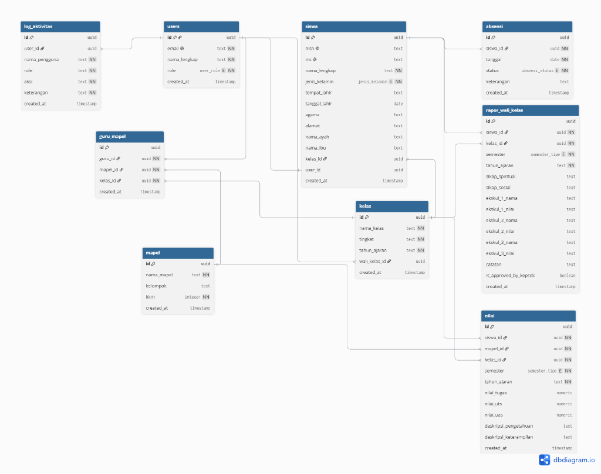
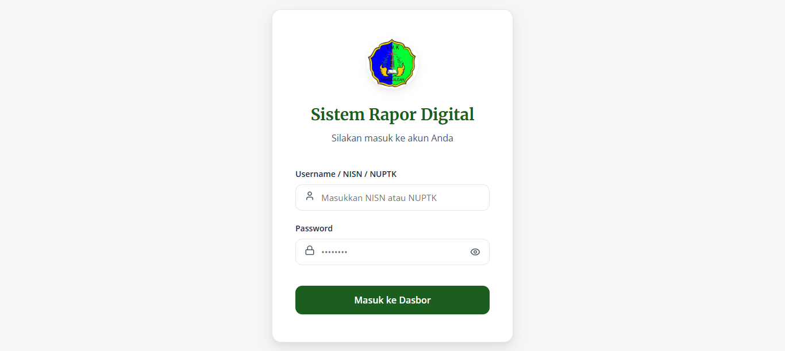

Rancang Bangun Sistem Informasi Rapor Digital Berbasis Website di SMK Nangkaleah
Menggunakan Metode Waterfall dan ISO/IEC 25010:2023
Pengelolaan Rapor Manual & Risk Data Corrupt
Pengelolaan rapor di SMK Nangkaleah masih manual menggunakan Microsoft Excel dan serah terima dokumen fisik, memicu kesalahan perhitungan (human error) dan risiko kehilangan/kerusakan data.
"Risiko file corrupt sangat tinggi karena pertukaran data nilai masih mengandalkan flashdisk antar guru mapel dan wali kelas."
Dampak Operasional
- Guru Mapel: Membutuhkan 1–2 hari penuh hanya untuk memverifikasi dan merekap nilai kelas.
- Wali Kelas: Membutuhkan waktu berminggu-minggu menggabungkan data dari berbagai file Excel.
- Orang Tua & Siswa: Tidak memiliki akses langsung untuk memantau perkembangan nilai secara real-time; rapor hanya dibagikan dalam bentuk cetak fisik.
Fokus Permasalahan Penelitian
Tiga pertanyaan utama yang menjadi pijakan dalam pengembangan dan pengujian sistem informasi rapor digital di SMK Nangkaleah.
-
1
Rancang Bangun Sistem Rapor Digital:
Bagaimana merancang dan membangun Sistem Informasi Rapor Digital berbasis website di SMK Nangkaleah menggunakan metode Waterfall untuk mengatasi kendala pengolahan nilai manual, serta risiko hilangnya data akibat pertukaran fisik?
-
2
Integrasi Notifikasi WhatsApp:
Bagaimana merancang fitur notifikasi pada Sistem Informasi Rapot Digital agar wali kelas dapat mengirim notifikasi rapot kepada orang tua/wali per siswa secara individual melalui WhatsApp dengan satu klik tombol pada masing-masing siswa?
-
3
Pengujian Standar ISO/IEC 25010:2023:
Bagaimana menguji tingkat kualitas, keamanan, dan kelayakan Sistem Informasi Rapor Digital yang dibangun dengan menggunakan pedoman standar ISO/IEC 25010:2023?
Target Solusi yang Dihasilkan
Pencapaian konkret yang dirancang untuk menjawab secara langsung setiap poin rumusan masalah.
Menghasilkan dan merancang bangun Sistem Informasi Rapor Digital berbasis website di SMK Nangkaleah menggunakan metode Waterfall yang mampu mengotomatisasi pengolahan nilai dan mendistribusikan laporan secara real-time, serta meminimalkan resiko hilangnya data akibat pertukaran fisik melalui penyimpanan data secara digital dan terpusat..
Menghasilkan fitur notifikasi berbasis WhatsApp pada sistem yang memungkinkan wali kelas mengirimkan pemberitahuan rapor
kepada orang tua/wali secara individual per siswa melalui tombol "Send Notif" pada setiap data siswa.
"Send Notif" untuk pengiriman
nilai secara privat oleh wali kelas.
Mengevaluasi kelayakan sistem informasi yang dibangun melalui pengujian komprehensif berdasarkan standar kualitas perangkat lunak ISO/IEC 25010:2023 pada aspek Functional Suitability, Usability, Portability, dan Security.
Ruang Lingkup & Batasan Sistem
Penetapan batasan operasional agar pengembangan sistem tetap terarah dan fokus pada kebutuhan mendesak sekolah.
-
01 / Arsitektur
Sistem yang dirancang berbasis website dan difokuskan pada digitalisasi penginputan, pengolahan, penyimpanan, hingga penyajian laporan akademik.
-
02 / Fitur WA
Fitur notifikasi WhatsApp dikirimkan secara manual per siswa oleh wali kelas melalui tombol "Send Notif" pada masing-masing data siswa, bukan secara serentak/broadcast ke seluruh siswa dalam satu kelas.
-
03 / Standar Kualitas
Evaluasi kelayakan produk perangkat lunak diukur secara eksklusif menggunakan parameter Functional Suitability, Usability, Portability, dan Security.
-
04 / Hak Akses
Pengguna terbagi atas 5 role: Tata Usaha (TU), Guru Mapel, Wali Kelas, Kepala Sekolah, dan Siswa.
-
05 / Siklus SDLC
Pengembangan metode Waterfall hanya sampai pada tahap pengujian (Testing) dan tidak mencakup tahap Maintenance.
Alur Sekuensial Model Air Terjun
Requirement Analysis
Observasi & wawancara mendalam dengan Kaprog PPLG Sandi Supriadi & Guru Mapel Ibu Tuti untuk analisis kebutuhan fungsional & non-fungsional.
System Design
Pemodelan UML (Use Case, Activity, Sequence Diagram), perancangan 9 entitas ERD database PostgreSQL, dan wireframe antarmuka.
Implementation
Penulisan kode frontend React JavaScript, pengolahan backend Supabase (BaaS) & Row Level Security, serta pengintegrasian jsPDF.
Testing (ISO/IEC 25010:2023)
Pengujian komprehensif 4 aspek kualitas (Functional,
Usability, Security, Portability).
*Penelitian berhenti di sini (tanpa Maintenance).
4 Karakteristik Pengujian Kualitas
Functional Suitability
Mengevaluasi kesesuaian fungsi aplikasi dengan 7 kebutuhan fungsional via Black Box Testing.
• Functional Completeness • Functional Correctness • Functional Appropriateness
Usability
Mengukur kemudahan penggunaan sistem oleh responden mengacu pada kuesioner System Usability Scale (SUS).
Security
Menguji ketahanan keamanan data terpusat menggunakan OWASP ZAP DAST scan + pengujian otorisasi manual RLS.
Portability
Memastikan kelancaran sistem saat dibuka di 5 kombinasi perangkat desktop, laptop, & HP/Tablet.
Pemetaan Kebutuhan Fungsional & Non-Fungsional
Kebutuhan Fungsional (7 Fitur Utama)
| Fitur | Deskripsi Skema Operasional |
|---|---|
| Hak Akses Berjenjang | Login membedakan peran TU, Guru Mapel, Wali Kelas, Kepsek, & Siswa. |
| Input Nilai | Guru mapel menginput nilai harian, PTS, dan PAS secara langsung. |
| Kalkulasi Otomatis | Sistem menghitung nilai akhir, predikat, & deskripsi capaian otomatis. |
| Pemantauan Real-Time | Wali kelas melihat rekapitulasi nilai kelas & grafik perkembangan. |
| Koreksi Data | Opsi pembaruan nilai praktis untuk menangani kesalahan ketik. |
| Akses Evaluasi | Siswa melihat hasil rapor secara online dari mana saja. |
| Cetak Rapor | Fitur pencetakan PDF resmi untuk birokrasi legalisir dokumen. |
Kebutuhan Non-Fungsional
| Aspek | Kriteria Standar Kualitas |
|---|---|
| Performance | Memangkas waktu pengolahan nilai dari berminggu-minggu menjadi hitungan jam. |
| Security | Penyimpanan terpusat database server meminimalkan risiko file corrupt/virus. |
| Portability | Antarmuka responsif nyaman di laptop (input guru) maupun HP (siswa). |
| Usability | UI intuitif & mudah dipelajari oleh guru senior tanpa pelatihan rumit. |
Pemetaan Hak Akses & Use Case Representatif
Tata Usaha
- Kelola data master siswa, kelas, & mapel
- Kelola akun pengguna & jadwal mengajar
- Input data absensi harian per kelas
Guru Mapel
- Input nilai Harian, PTS, & PAS
- Koreksi / edit nilai salah ketik
Wali Kelas
- Pantau nilai real-time & grafik kelas
- Input catatan perkembangan wali kelas
- Rekap, validasi, & cetak/terbit rapor
Kepala Sekolah
- Approve & Tanda Tangan Digital Rapor
- Pantau laporan & statistik akademik
Siswa
- Pantau hasil evaluasi rapor online
- Unduh dokumen PDF rapor resmi
Entity Relationship Diagram (9 Tabel Utama)

Stack Teknologi & Arsitektur
React JavaScript (UI Dinamis & Interaktif)
Supabase (PostgreSQL, Autentikasi, REST API, & Row Level Security)
jsPDF (Rendering PDF Rapor A4)



Notifikasi WhatsApp Satu Klik Per Siswa
Wali kelas dapat mengirimkan hasil evaluasi belajar langsung
kepada orang tua/wali murid secara
individual dan privat melalui tombol
"Send Notif" pada setiap baris data
siswa.
Functional Suitability
Black Box Testing menguji 7/7 test case fungsional menggunakan 5 teknik: Equivalence Partitioning, Boundary Value Analysis, Decision Table, State Transition, dan Scenario-Based Testing.
System Usability Scale (SUS)
Evaluasi kebergunaan melibatkan 66 responden pengguna akhir sistem di SMK Nangkaleah.
Grafik Skor SUS Berdasarkan Peran (Scale 0–100)
Security Testing & RLS Fix
Pengujian DAST menggunakan OWASP ZAP (15 passive alerts Low-Medium, 0 active scan alert) + manual API testing 4 skenario otorisasi RLS.
Celah SC-06: RLS users memakai
auth.role() = 'authenticated'
sehingga siswa dapat membaca 109 baris data akun pengguna
lain.
Pass Rate 4/4 Skenario. Akses SELECT tabel
users dibatasi ketat hanya
untuk baris milik sendiri (kecuali TU & Kepsek).
Portability & Compatibility
Pengujian Adaptability memastikan antarmuka berjalan normal lintas 5 kombinasi perangkat dan browser tanpa layout overflow.
Matriks Responsivitas 5 Perangkat / Browser
Rekap Evaluasi 4 Aspek ISO/IEC 25010:2023
| Aspek Pengujian ISO 25010 | Hasil Metrik | Kategori Kelayakan |
|---|---|---|
| Functional Suitability | 100% | Sangat Layak |
| Usability (SUS) | 72,12 | Acceptable (Grade C+) |
| Security | 75% → 100% | Layak (setelah perbaikan) |
| Portability | 3,90 | Baik |
Visualisasi Pemenuhan Standar Kualitas
Kesimpulan Akhir
Tiga poin utama yang menutup lingkaran naratif perancangan dan pengujian sistem informasi rapor digital SMK Nangkaleah.
- Otomatisasi & Penyimpanan Terpusat: Sistem informasi rapor digital berbasis website berhasil dirancang menggunakan metode Waterfall untuk mengotomatisasi pengolahan nilai dan menghilangkan risiko hilangnya fisik dokumen.
- Fitur Notifikasi WhatsApp: Fitur notifikasi WhatsApp per siswa via tombol "Send Notif" berhasil diimplementasikan dengan 100% Functional Suitability Rate.
- Kelayakan ISO/IEC 25010:2023: Sistem terbukti sangat layak diimplementasikan di SMK Nangkaleah berdasarkan evaluasi Functional (100%), Usability (72,12), Security (100%), dan Portability (3,90).
Rekomendasi Pengembangan Selanjutnya
Pengembangan fitur notifikasi WhatsApp secara massal / broadcast per kelas untuk meningkatkan efisiensi waktu.
Melanjutkan pengembangan ke tahap Maintenance sistem secara berkala dan pemantauan keamanan rutin.
Penambahan fitur analitik & dashboard statistik nilai untuk pemantauan perkembangan akademik sekolah secara jangka panjang.
Pengembangan versi mobile app native untuk meningkatkan aksesibilitas orang tua dan siswa.
Terima Kasih
Sesi Tanya Jawab & Diskusi Penguji